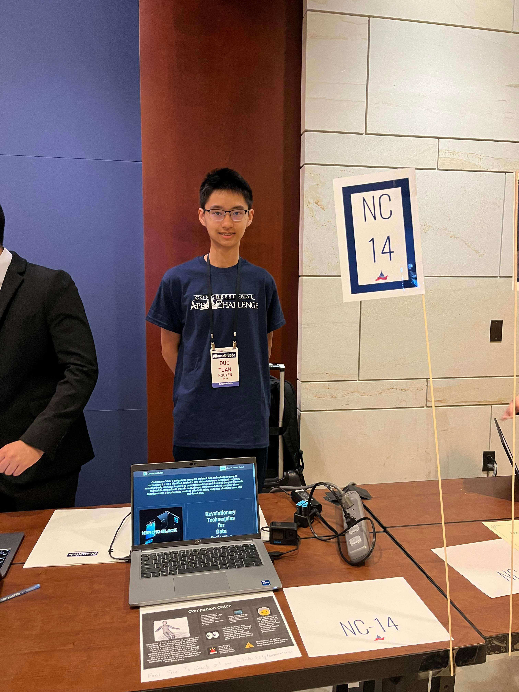

Duc Tuan Nguyen
I'm
Experienced frontend developer with a passion for creating visually stunning and user-friendly websites.

About Me
My introduction
I am well versed in HTML, CSS, and JavaScript, and other cutting edge frameworks and libraries, which allows me to implement interactive features. Additionally, I have experience working with content management systems (CMS) like Wordpress.
Frontend
HTML
CSS
Bootstrap
JavaScript
React Native
Swift
Backend
Python
PHP
Java
C++
Database
MySQL
PostgreSQL
MongoDB
Projects
Click the cards for more information!
Get in touch
For more information about me, contact me hereFind Me
Email: ductnguyen.dtn@gmail.com
Phone: +1 (980) 446-0883